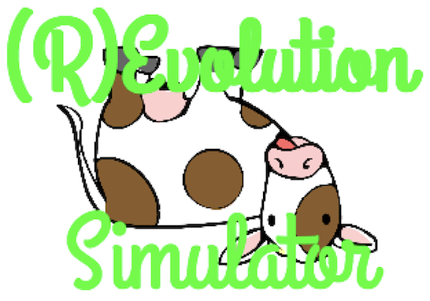

(R)Evolution Simulator
(R)Evolution Simulator è un programma scritto in linguaggio Python e permette di simulare l'evoluzione di una specie, la selezione naturale all'interno di questa e molti altri comuni processi naturali.
What is it?
In every field of research, the usage of computers is growing very fast, since they permit to simulate natural environments, in which it possible to analyse and observe particular events, in an easy way. Using software, spatial flights, astronomical motions and ecosystems can be simulated as videogames. Our project consists of a Python program simulating the processes of evolution of a specie in a virtual world. Each creature behaves as in the real world: they look for the most comfortable habitat, they feed and reproduce themselves. On the contrary if they are in an uncomfortable zone, they will probably die.
Looking at data, we can observe the mechanisms of population genetics, the large-scale transmission of genetic traits and the natural selection of creatures of a specie. The different traits (both numerical and Mendelian ones) and their behaviour will be analysed comparing them with the Hardy-Weinberg principle and the genetic drift.
Our creatures represent very well any specie of herbivores, whose simple behaviour, shows the sinusoidal trend of the population and the diversified distribution in the territory. The graphic interface, made with Python, permits to display everything in a very simple and efficient way.
The user interface
In the graphical user interface, chunks are represented as small squares (Figure 2) and creatures as small circles. The dimension of circles may represent different features of the creatures. In Figure 5, the bigger the circles, the more energy the corresponding creatures have at that moment, because they have just eaten some food.
Also the colour of the creatures shows different features of them:
- cyan/yellow represent the two possible sexes;
- red/grey-white/blue represent the different phenotypes of temp-resist. In particular, red creatures correspond to c phenotype (fitted for hotter zones), blue creatures correspond to l phenotype (cooler zones), white and grey creatures correspond respectively to ho- mozygous N phenotype and heterozygous N phenotype (fitted for mild portions);